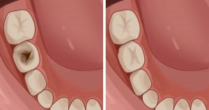
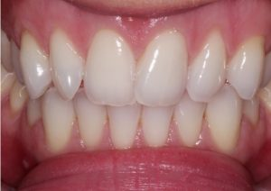

Dental or oral health is concerned with your teeth, gums and mouth. The goal is to prevent complications such as tooth decay (cavities) and gum disease and to maintain the overall health of your mouth. A healthy mouth, free of infections, injuries and other problems with teeth and gums, is important in maintaining your overall health. Although a different set of medical professionals focuses on dental health, they are still part of your regular health care team. Disease and other conditions can affect your dental health and dental problems can affect other parts of your body. Failing to properly care for your oral health may lead to other health problems. You can help prevent or minimize many oral health problems by regular preventive steps (brushing, flossing and so on) and regular visits to dental health professionals. Injuries to mouth Injuries to the mouth and teeth can cause problems, especially for young people playing sports. Make sure young (and not so young) athletes use a properly fitted mouth guard, especially when playing contact sports or engaging is activities where falls and blows to the mouth are possible. Dental health begins shortly after birth and continues the rest of your life. Constant and consistent oral health habits come from habits and patterns established as children under the direction of a parent. Good oral health practices and regular visits to dental health professionals will help you enjoy the benefits of a bright smile and a pain-free mouth. If you begin good oral health practices at an early age and stick with them through adulthood, the odds are good that you will have a healthy mouth, pleasant breath, strong teeth and a bright smile. Even if you have let dental problems develop over time, it is never too late to see a dental health professional for corrective procedures. Thanks to modern practices, much of the pain some people fear is gone from dental health procedures.
iconConnect with your doctor Already have a doctor? Calling your doctor's office directly is the best way to discuss your appointment options. Find the most up-to-date information here: iconOnline appointments: Manage appointments through your online patient portal, My Marshfield Clinic. Don’t have a log on? No problem.
sunday 9.00AM To 7.00AM
Monday 9.00AM To 7.00AM
Tuesday 9.00AM To 7.00AM
Wednesday 9.00AM To 7.00AM
Thursday 9.00AM To 7.00AM
Friday 9.00AM To 7.00AM
Saturday 9.00AM To 7.00AM
A filling is one of the most common dental procedures. It’s basically a repair job to fix the damage done by tooth decay. It’s typically a painless procedure that takes about an hour. Cavities are incredibly common nowadays. According to the World Health Organization, untreated cavities are the most common dental condition worldwide, experienced by approximately 2 billion people with permanent teeth (adults). A filling helps prevent further decay and allows your tooth to function as expected. Keep reading to learn more about what to expect if you need a filling, the materials most commonly used, and how long it takes for a filling to set and heal. How long does it take to get a filling? In general, a filling takes an hour or less. A simple filling may take as few as 20 minutes. Many dental offices now have the technology to make onlays and inlays in one appointment, though a larger filling or multiple fillings can take longer. Plus, depending on the materials used for the filling, it could take longer or require a second visit. For instance: Composite resin material that’s layered into your tooth takes more time, but it’s completed in one visit. Some composite fillings may be made from an impression. This requires a second visit to bond the filling. Gold or porcelain fillings, also called inlays or onlays, can only be done in one sitting if your dental office has the require equipment. Otherwise, it takes multiple visits. In the first visit, the dentist will remove the cavity and make impression of your tooth. They’ll send the impression to a lab to create the filling. At the next visit, they’ll bond the filling to your tooth. Replacing an older filling generally takes about the same amount of time as the original filling. It may take slightly longer if the old filling material has to be drilled out. A healthcare professional will clean out the cavity and old filling material, then insert new filling material.
Teeth cleaning, along with whitening and bleaching is done with utmost care, for a smile that looks not just beautiful, but also healthy.Want a brighter smile? When it comes to tooth-whitening, you've got two options: in-office-based teeth bleaching, or at-home care. Both tooth-whitening options use peroxide-based bleaching agents. At-home systems contain from 3% to 20% peroxide (carbamide or hydrogen peroxides). In-office systems contain from 15% to 43% peroxide. Generally, the longer you keep a stronger solution on your teeth, the whiter your teeth become. However, the higher the percentage of peroxide in the whitening solution, the shorter it should be applied to the teeth. Keeping the gel on longer will dehydrate the tooth and increase tooth sensitivity.
Welcome to Dental Care at Crossing of Wake Forest, North Carolina! We are dedicated to providing the Wake Forest area with the highest quality of dental services for all your oral health needs. We understand that visiting the dentist can be stressful, so we have designed our facility and procedures with your comfort and ease in mind. Regardless of your reason for visiting, you can rest assured that everyone at Dental Care at Harris Crossing, from our front office staff to our hygienists and dentists, will make sure that your dental treatment is as effective, affordable, and pleasant as possible. At Dental Care at Crossing, we want you and your family to feel good about going to the dentist. By working with you to understand your unique situation, we are able to help you achieve your health and appearance goals. This patient-centered approach ensures the positive experience and the results that will help you enjoy the benefits of good dental health. Central to our mission of patient-centered dentistry is your care and comfort. You will see evidence of this mission the moment you walk into our office. Further evidence of our commitment is our investment into lifetime learning, patient-centered technology, and patient comfort features. However, we are most proud of the group of professionals that we have assembled and their individual commitment to your well-being. We invite you to look around our site and to see the benefits of being part of the Dental Care at Harris Crossing, patient family. We know that the first step towards a healthy and beautiful smile begins with selecting a dentist you can rely upon.